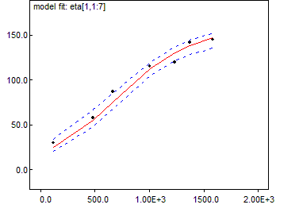

Inference Menu
General properties
These menu items open dialog boxes for making inferences about parameters of the model. The commands are divided into three sections: the first three commands concern an entire set of monitored values for a variable; the next two commands are space-saving short-cuts that monitor running statistics; and the final command, Information Criterion..., concerns evaluation of the
Deviance Information Criterion proposed by
Spiegelhalter et al. (2002). and
Widely Applicable Information Criterion Users should ensure their simulation has converged before using Summary..., Rank... or Information Criterion...Note that if the MCMC simulation has an adaptive phase it will not be possible to make inference using values sampled before the end of this phase.
Samples...
This command opens a non-modal dialog for analysing stored samples of variables produced by the MCMC simulation.
It is incorrect to make statistical inference about the model when the simulation is in an adaptive phase. For this reason some of the buttons in the samples dialog will be grayed out during any adaptive phase.
The dialog fields are:
node: The variable of interest must be typed in this text field. If the variable of interest is an array, slices of the array can be selected using the notation variable[lower0:upper0, lower1:upper1, ...]. The buttons at the bottom of the dialog act on this variable. A star '*' can be entered in the node text field as shorthand for all the stored samples. These buttons are arranged in two groups: the first group is associated with quantities of substantive interest while the second group gives information about how well the simulation is performing.
BUGS automatically sets up a logical node to measure a quantity known as deviance; this may be accessed, in the same way as any other variable of interest, by typing its name, i.e. "deviance", in the
node field of the
Sample Monitor Tool. The definition of deviance is -2 * log(likelihood): 'likelihood' is defined as p(
y |
theta ), where
y comprises all stochastic nodes given values (i.e. data), and
theta comprises the
stochastic parents of
y - 'stochastic parents' are the stochastic nodes upon which the distribution of
y depends, when collapsing over all logical relationship
beg and
end: numerical fields used to select a subset of the stored sample for analysis.
thin: numerical field used to select every
kth iteration of each chain to contribute to the statistics being calculated, where
k is the value of the field. Note the difference between this and the thinning facility on the
Update Tool dialog box: when thinning via the
Update Tool we are
permanently discarding samples as the MCMC simulation runs, whereas here we have already generated (and stored) a suitable number of (posterior) samples and may wish to discard some of them only temporarily. Thus, setting
k > 1 here will not have any impact on the storage (memory) requirements of processing long runs; if you wish to reduce the number of samples actually stored (to free-up memory) you should thin via the
Update Tool.
chains . to .: can be used to select the chains which contribute to the statistics being calculated.
clear: removes the stored values of the variable from computer memory.
set: must be used to start recording a chain of values for the variable.
stats: produces summary statistics for the variable, pooling over the chains selected. The required percentiles can be selected using the
percentile selection box. The quantity reported in the MC error column gives an estimate of s / N
1/2, the Monte Carlo standard error of the mean. The batch means method outlined by Roberts (1996; p.50) is used to estimate s.
density: plots a smoothed kernel density estimate for the variable if it is continuous or a histogram if it is discrete.
coda:produces an ascii representation of the monitored values suitable for use in the
CODA R/Splus diagnostic package. A window for each chain is produced, corresponding to the .out files of
CODA, showing the iteration number and value (to four significant figures). There is also a window containing a description of which lines of the .out file correspond to which variable - this corresponds to the
CODA .ind file. These can be named accordingly and saved as text files for further use. (Care may be required to stop the Windows system adding a .txt extension when saving: enclosing the required file name in quotes should prevent this.)
trace: plots the variable value against iteration number. This trace is dynamic, being redrawn each time the screen is redrawn.
jump: plots the mean square jumping distance of nodes with updaters averaged over batches of 100 iterations. This is related to the lag one auto-correlation.
bgr diag: calculates the Gelman-Rubin statistic, as modified by Brooks and Gelman (1998). The basic idea is to generate multiple chains starting at over-dispersed initial values, and assess convergence by comparing within- and between-chain variability over the second half of those chains. We denote the number of chains generated by M and the length of each chain by 2T. We take as a measure of posterior variability the width of the 100(1
- α)% credible interval for the parameter of interest (in BUGS,
α = 0.2). From the final T iterations we calculate the empirical credible interval for each chain. We then calculate the average width of the intervals across the M chains and denote this by W. Finally, we calculate the width B of the empirical credible interval based on all MT samples pooled together. The ratio R = B / W of pooled to average interval widths should be greater than 1 if the starting values are suitably overdispersed; it will also tend to 1 as convergence is approached, and so we might assume convergence for practical purposes if R < 1.05, say.
Rather than calculating a single value of R, we can examine the behaviour of R over iteration-time by performing the above procedure repeatedly for an increasingly large fraction of the total iteration range, ending with all of the final T iterations contributing to the calculation as described above. Suppose, for example, that we have run 1000 iterations (T = 500) and we wish to use the resulting sample to calculate 10 values of R over iteration-time, ending with the calculation involving iterations 501
-1000. Calculating R over the final halves of iterations 1
-100, 1
-200, 1
-300, ..., 1
-1000, say, will give a clear picture of the convergence of R to 1 (assuming the total number of iterations is sufficiently large). If we plot against the starting iteration of each range (51, 101, 151, ..., 501), then we can immediately read off the approximate point of convergence, e.g.
BUGS automatically chooses the number of iterations between the ends of successive ranges: max(100, 2T / 100). It then plots R in red, B (pooled) in green and W (average) in blue. Note that B and W are normalised so that the maximum estimated interval width is one
- this is simply so that they can be seen clearly on the same scale as R. Brooks and Gelman (1998) stress the importance of ensuring not only that R has converged to 1 but also that B and W have converged to stability. This strategy works because both the length of the chains used in the calculation and the start-iteration are always increasing. Hence we are guaranteed to eventually (with an increasing sample size) discard any burn-in iterations and include a sufficient number of stationary samples to conclude convergence.
In the above plot convergence can be seen to occur at around iteration 250. Note that the values underlying the plot can be listed to a window by right-clicking on the plot, selecting Properties, and then clicking on Data (see
BUGS Graphics).
history: plots out a complete trace for the variable.
accept: plots the fraction of iterations a node with an updater changes its value over batches of 100 iterations.
quantiles:plots out the running mean with running 95% confidence intervals against iteration number.
auto cor: plots the autocorrelation function of the variable out to lag 100.
See
BUGS Graphics for details of how to customize these plots.
Compare...
Select
Compare... from the
Inference menu to open the
Comparison Tool dialog box. This is designed to facilitate comparison of elements of a vector of nodes (with respect to their posterior distributions).
node: defines the vector of nodes to be compared with each other. As the comparisons are with respect to posterior distributions,
node must be a monitored variable.
other: where appropriate,
other defines a vector of reference points to be plotted alongside each element of
node (on the same scale), for example,
other may be the observed data in a
model fit plot (see below). The elements of
other may be either monitored variables, in which case the posterior mean is plotted, or they may be observed/known.
axis: where appropriate,
axis defines a set of values against which the elements of
node (and
other) should be plotted. Each element of
axis must be either known/observed or, alternatively, a monitored variable, in which case the posterior mean is used.
Note: node,
other, and
axis should all have the same number of elements!
beg and
end: are used to select the subset of stored samples from which the desired plot should be derived.
box plot: this command button produces a single plot in which the posterior distributions of all elements of
node are summarised side by side. For example,
By default, the distributions are plotted in order of the corresponding variable's index in
node and are also labeled with that index. Boxes represent inter-quartile ranges and the solid black line at the (approximate) centre of each box is the mean; the arms of each box extend to cover the central 95 per cent of the distribution - their ends correspond, therefore, to the 2.5% and 97.5% quantiles. (Note that this representation differs somewhat from the traditional.)
(The default value of the baseline shown on the plot is the global mean of the posterior means.)
There is a special "property editor" available for box plots, as indeed there is for all graphics generated via the
Comparison Tool. This can be used to interact with the plot and change the way in which it is displayed, for example, it is possible to rank the distributions by their means or medians and/or plot them on a logarithmic scale.
caterpillar: a "caterpillar" plot is conceptually very similar to a box plot. The only significant differences are that the inter-quartile ranges are not shown and the default scale axis is now the x-axis - each distribution is summarised by a horizontal line representing the 95% interval and a dot to show where the mean is. (Again, the default baseline - in red - is the global mean of the posterior means.) Due to their greater simplicity caterpillar plots are typically preferred over box plots when the number of distributions to be compared is large.
density strips: A density strip is similar to a box plot, but more informative. Instead of just summary statistics, it represents the entire posterior distribution through shading. A density estimate of the distribution is computed, as described in
Density plot, and the darkness of the strip at each point is defined as proportional to the estimated density. For a discussion of this shading technique see
Jackson (2008).
model fit: the elements of
node (and
other if specified) are treated as a time-series, defined by (increasing values of) the elements of
axis. The posterior distribution of each element of
node is summarised by the 2.5%, 50% and 97.5% quantiles. Each of these quantities is joined to its direct neighbours (as defined by
axis) by straight lines (solid red in the case of the median and dashed blue for the 95% posterior interval) to form a piecewise linear curve - the 'model fit'. In cases where
other is specified, its values are also plotted, using black dots, against the corresponding values of
axis, e.g.

Where appropriate, either or both axes can be changed to a logarithmic scale via a property editor
scatterplot: by default, the posterior means of
node are plotted (using blue dots) against the corresponding values of
axis and an exponentially weighted smoother is fitted.
Correlations...
This non-modal dialog box is used to plot out the relationship between the simulated values of selected variables, which must have been monitored.
nodes: scalars or arrays may be entered in each box, and all combinations of variables entered in the two boxes are selected. If a single array is given, all pairwise correlations will be plotted.
scatter: produces a scatter plot of the individual simulated values.
matrix: produces a matrix summary of the cross-correlations.
print: opens a new window containing the coefficients for all possible correlations among the selected variables.
The calculations may take some time.
Summary...
.This non modal dialog box is used to calculate running means, standard deviations and quantiles. The commands in this dialog are less powerful and general than those in the
Sample Monitor Tool, but they also require much less storage (an important consideration when many variables and/or long runs are of interest).
node: The variable of interest must be typed in this text field.
set: starts recording the running totals for
node.
stats: displays the running means, standard deviations, and 2.5%, 50% (median) and 97.5% quantiles for
node.
Note that these running quantiles are calculated via an approximate algorithm (see
here for details)
and should therefore be used with caution.
means: displays the running means for
node in a comma delimited form. This can be useful for passing the results to other statistical or display packages.
clear: removes the running totals for
node.
Rank...
.
This non-modal dialog box is used to store and display the ranks of the simulated values in an array.
node: the variable to be ranked must be typed in this text field (must be an array).
set: starts building running histograms to represent the rank of each component of
node. An amount of storage proportional to the square of the number of components of
node is allocated. Even when
node has thousands of components this can require less storage than calculating the ranks explicitly in the model specification and storing their samples, and it is also much quicker.
stats: summarises the distribution of the ranks of each component of the variable
node. The quantiles highlighted in the percentile selection box are displayed.
histogram: displays the empirical distribution of the simulated rank of each component of the variable
node.
clear: removes the running histograms for
node.
Information Criterion...
.
The
Information Criterion Tool dialog box is used to evaluate the
Deviance Information Criterion (DIC;
Spiegelhalter et al., 2002) and
Widely Applicable Information Criterion (WAIC) - these can be used to assess model complexity and compare different models. Most of the
examples packaged with
BUGS contain an example of their usage.
It is important to note that DIC assumes the posterior mean to be a good estimate of the stochastic parameters. If this is not so, say because of extreme skewness or even bimodality, then DIC may not be appropriate. There are also circumstances, such as with mixture models, in which BUGS can not calculate DIC. Please see the BUGS web-page for current restrictions: Dic info
set: starts calculating DIC and WAIC - the user should ensure that convergence has been achieved before pressing
set as all subsequent iterations will be used in the calculation.
clear: if a DIC calculation has been started (via
set) this will clear it from memory, so that it may be restarted later.
stats: displays the calculated statistics, as described below; see
Spiegelhalter et al. (2002) for full details; the section
Advanced Use of the BUGS Language also contains some comments on the use of DIC.
The stats button generates the following statistics:
Dbar: this is the posterior mean of the deviance, which is exactly the same as if the node 'deviance' had been monitored (see
here). This deviance is defined as -2 * log(likelihood): 'likelihood' is defined as p(y |
theta), wherey comprises all stochastic nodes given values (i.e. data), and
theta comprises the
stochastic parents ofy - 'stochastic parents' are the stochastic nodes upon which the distribution ofy depends, when collapsing over all logical relationships.
Dhat: this is a point estimate of the deviance (-2 * log(likelihood)) obtained by substituting in the posterior means
theta.bar of
theta: thus Dhat = -2 * log(p(y |
theta.bar))
.
DIC: this is the 'Deviance Information Criterion', and is given by
DIC = Dbar + pD or
DIC = Dhat + 2 * pD. The model with the smallest DIC is estimated to be the model that would best predict a replicate dataset of the same structure as that currently observed
.
WAIC: this is the 'Widely Applicable Information Criterion'. It is a model of model fit penalized by model complexity. It is connected with leave one out cross validation (LOOCV).
pD: this is 'the effective number of parameters', and is given by
pD = Dbar - Dhat. Thus pD is the posterior mean of the deviance minus the deviance of the posterior means.
pW: is a measure of model complexity.
Currently there are problems with the calculation of DIC and WAIC when the MCMC simulation is distributed over multiple cores. We use a different way of calculating pD in this case as one half of the variane of the deviance. We can calculate WAIC and pW easily for each MCMC chain but have no way of calculating values of these two quantites using all chains. We therefore quote WAIC and pW for each chain.